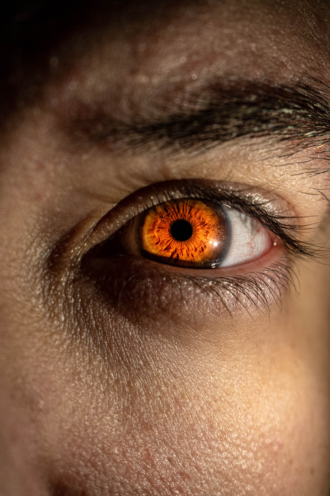

Our Mission
to provide an enjoyable experience in front of the camera as well as timeless photographs that you will treasure for a lifetime
Photos of the month
-

The eyes shout what the lips fear to say.
-

A reader lives a thousand lives before he dies . . .
-

St. Mary’s Basilica
-

A portrait is not made in the camera but on either side of it.
-

We all have magic inside us.
About me
Hi, I'm Tasos
I am a photographer based in Athens, Greece. I have been taking photos for 3 years now and I am very passionate about it. I love capturing the beauty of the world and the people around me.